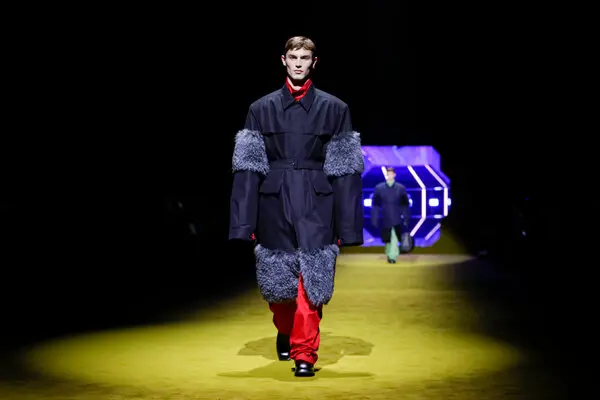

The intresting thing about is they aren't as bad as the rest on this hatepage. Honestly they are still up for debate still to this day. They fall in the, "Oh because we are already known we make fashion" type of company like most do. I understant things could have already been done but something like standing out is what they like to do and not good may I add. See standing out isn't bad at all if its done right and I only see that with less know brands. Prada is more lowkey about their fashion and aren't talked about alot. Sometimes we make mistakes and they made of the mistake to call this fashion, but what do I know i just wearing nike.
I think purses is what they are best at. Honestly it isn't as bad as I make it seem but would I wear this to even go out or something? I'll tell you now I rather die. No acting this is maybe something for others but if I was to get my hands on this I would use it in my bonefire to make some marshmellows. I might just do that right now, better be worth my money. I mean you made it this far might as well take more look here.